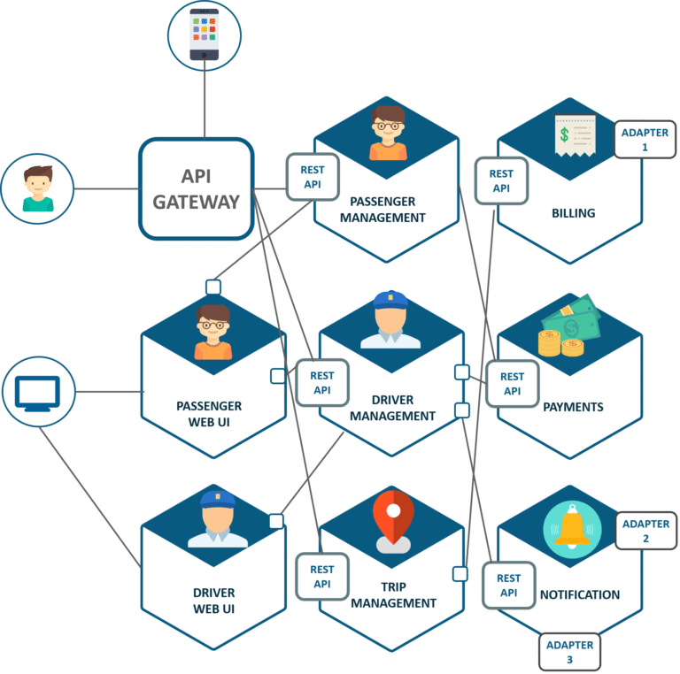
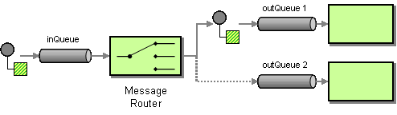
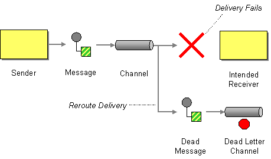
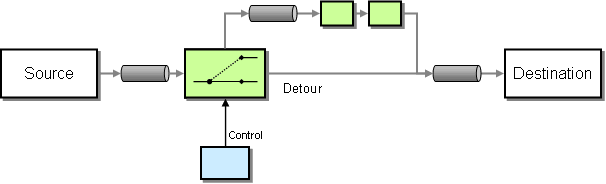
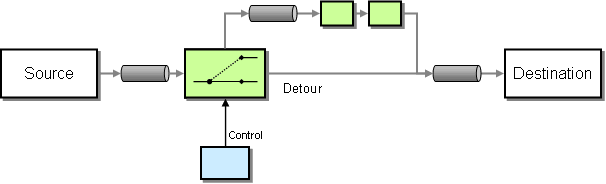

ALOM
Messaging
UBER
Un micro-service c'est :
-
Un ou plusieurs canaux de communication
- HTTP - REST/JSON
- Un ensemble de fonctionnalités du même domaine métier
- Une source de données dédié
- Un composant d'affichage
Problématiques :
Exécuter des traitements longs sans bloquer l'utilisateur
Exécuter des traitements "schedulés" (cron)
- Envois de mails
- Impression de documents
Répartition de charge de travail entre serveurs
Traitements aynchrones
Modèle : Envoi de messages
Message : "donnée à traiter"
-
En-tête
- Priorité
- Expiration
- Options de redistribution
- Règles de routage
- Contenu (binaire ou texte)
Traitements aynchrones
Mécanisme de "listener"
Opérations send/receive transactionnelles
Broker
Courtier : Programme intermédiaire entre un client et un serveur
Message Broker
- Gestion des queues/topic
- Gère physiquement les données des messages (persistance)
- Permet aux clients de s'abonner
- Transmission des messages aux abonnés
JMS Java Message Service
Queue : File FIFO
Les messages sont stockés jusqu'a consommation ou expiration
Les messages sont distribués dans l'ordre
JMS
Topic : Broadcast
Les messages sont transmis à tous les abonnés présent au moment de la réception
AMQP Advanced Message Queuing Protocol
Un Producer envoie des messages à un Exchange. L'Exchange route les messages vers les Queue. Un Consumer s'abonne à une Queue.
AMQP
fanout
Les Exchange de type fanout routent les messages à toutes les Queue bindées
AMQP
direct
Les Exchange et les Queue sont bindées avec une routing_key L'Exchange utilise la routing_key (exacte) pour décider dans quelle Queue envoyer un message.
AMQP
topic
Les Exchange et les Queue sont bindées avec une routing_key L'Exchange utilise la routing_key (patterns */#) pour décider dans quelle Queue envoyer un message.

Patterns
Message router
Patterns
Dead Letter Channel
Patterns
Message Expiration

Patterns
Request-Reply

Patterns
Wire-Tap/Detour
 

Produits implémentant AMQP
Avec Spring
Spring AMQP
RabbitTemplatepour envoyer et recevoir des messagesRabbitAdminpour créer des Exchanges/Queues/Bindings
TP